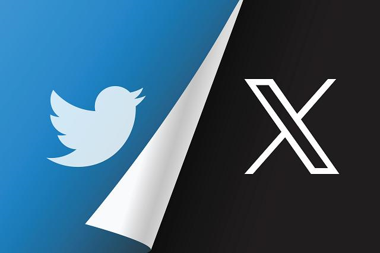

|  | Es una red social en la que los usuarios pueden publicar
mensajes cortos de texto, vídeos, imágenes, GIF animados, encuestas, etc.
Estos tweets tienen un límite de caracteres, que inicialmente era de 140 pero se amplió a 280 en 2017. La plataforma fue lanzada en 2006. En 2023, Twitter fue renombrado como "X" por su nuevo propietario, Elon Musk, quien adquirió la plataforma en 2022. El cambio de nombre es parte de una reimaginación más amplia de la plataforma. |
Continuará...
Regresar al menú